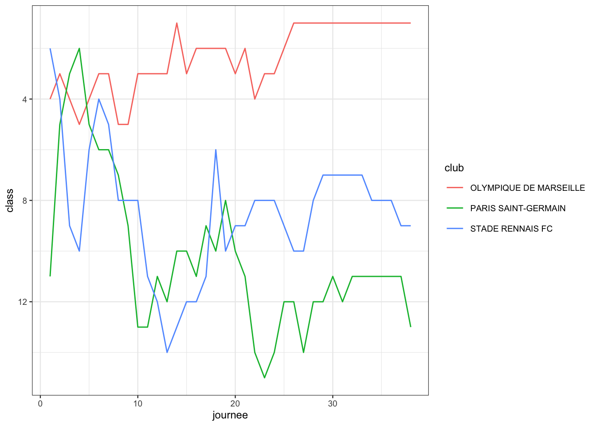

6 Web scraping
De nombreuses données sont disponibles sur le web
- Site interne d’entreprise ;
- Wikipedia ;
- IMDb ;
- etc…
Cette information étant souvent structurée, il est possible de pouvoir la récupérer de façon semi-automatisée : on parle de web-scraping. Le package de référence pour scraper des données est rvest :
library(rvest)Intéressons nous à la filmographie de Louis de Funès disponible sur Wikipédia : https://fr.wikipedia.org/wiki/Filmographie_de_Louis_de_Fun%C3%A8s. La fonction read_html permet d’importer le code html dans R :
url_wikipedia <- "https://fr.wikipedia.org/"
url_filmographie <- "wiki/Filmographie_de_Louis_de_Funès"
url <- str_c(url_wikipedia, url_filmographie)
(data_html <- read_html(url)){html_document}
<html class="client-nojs vector-feature-language-in-header-enabled vector-feature-language-in-main-page-header-disabled vector-feature-sticky-header-disabled vector-feature-page-tools-pinned-disabled vector-feature-toc-pinned-clientpref-1 vector-feature-main-menu-pinned-disabled vector-feature-limited-width-clientpref-1 vector-feature-limited-width-content-enabled vector-feature-custom-font-size-clientpref-0 vector-feature-client-preferences-disabled vector-feature-client-prefs-pinned-disabled vector-feature-night-mode-disabled skin-night-mode-clientpref-0 vector-toc-available" lang="fr" dir="ltr">
[1] <head>\n<meta http-equiv="Content-Type" content="text/html; charset=UTF-8 ...
[2] <body class="skin-vector skin-vector-search-vue mediawiki ltr sitedir-ltr ...On va ensuite très souvent utiliser la fonction html_elements qui va nous permettre de récupérer différents éléments de la page web. On peut par exemple obtenir tous les titres de section de niveau 4 avec :
(titre4 <- data_html |>
html_elements("h4")){xml_nodeset (5)}
[1] <h4>\n<span id="Ann.C3.A9es_1940"></span><span class="mw-headline" id="An ...
[2] <h4>\n<span id="Ann.C3.A9es_1950"></span><span class="mw-headline" id="An ...
[3] <h4>\n<span id="Ann.C3.A9es_1960"></span><span class="mw-headline" id="An ...
[4] <h4>\n<span id="De_1970_.C3.A0_1982"></span><span class="mw-headline" id= ...
[5] <h4>\n<span class="mw-headline" id="Colorisations">Colorisations</span><s ...On obtient une version plus lisible avec html_text ou html_text2 :
titre4 |>
html_text2()[1] "Années 1940[modifier | modifier le code]"
[2] "Années 1950[modifier | modifier le code]"
[3] "Années 1960[modifier | modifier le code]"
[4] "De 1970 à 1982[modifier | modifier le code]"
[5] "Colorisations[modifier | modifier le code]" Il est souvent nécessaire d’être plus précis sur la sélection des noeuds de la page web qui nous intéressent. Cela peut s’effectuer de deux façons différentes en utilisant des sélecteurs css ou xpath.
6.1 Sélecteurs CSS
La syntaxe est basée sur des noms de balises, des classes, des identifiants, des relations entre les éléments, etc. Par exemple : div, .classe, #identifiant. On peut par exemple obtenir le premier film des années 1940 avec
data_html |>
html_elements('#mw-content-text >
div.mw-content-ltr.mw-parser-output >
ul:nth-child(10) >
li:nth-child(1) >
i:nth-child(2) >
a') |>
html_attrs()[[1]]
href title
"/wiki/Au_revoir_monsieur_Grock" "Au revoir monsieur Grock" Le résultat obtenu correspond au chemin défini par les balises :
- div identifié par
mw-content-text\(\Longrightarrow\)\#mw-content-text - div de classe
mw-content-ltr.mw-parser-output\(\Longrightarrow\)div.mw-content-ltr.mw-parser-output - élément ul qui correspond au 9ième enfant de la balise précédente \(\Longrightarrow\)
ul:nth-child(10) - …
On pourra obtenir tous les films des années 1940 avec
data_html |>
html_elements('#mw-content-text >
div.mw-content-ltr.mw-parser-output >
ul:nth-of-type(2) > li > i> a') |> #idem nth-child(10)
html_attrs() |> head(3)[[1]]
href title
"/wiki/Au_revoir_monsieur_Grock" "Au revoir monsieur Grock"
[[2]]
href
"/wiki/Pas_de_week-end_pour_notre_amour"
title
"Pas de week-end pour notre amour"
[[3]]
href title
"/wiki/Mon_ami_Sainfoin" "Mon ami Sainfoin" 6.2 Sélecteur xpath
La syntaxe est basée sur des chemins et des expressions. Ce moyen est plus flexible, il permet de définir des chemins plus complexes pour accéder aux éléments, comme : /div(class?, =‘classe’). On obtient tous les films des années 1940 avec
data_html |>
html_elements(xpath ='//*[@id="mw-content-text"]
/div/ul[
preceding::h4[span/@id="Années_1940"]
and
following::h4[span/@id="Années_1950"]]
/li/i/a') |>
html_text2() |> head()[1] "La Tentation de Barbizon" "Six Heures à perdre"
[3] "Le Château de la dernière chance" "Dernier Refuge"
[5] "Antoine et Antoinette" "Croisière pour l'inconnu" 6.3 SelectorGadget
La syntaxe pour définir les chemins css et xpath n’est pas simple. Heureusement, les navigateurs proposent des extensions qui vont nous permettre de retrouver ces chemins. On utilise souvent SelectorGadget, elle est facile à installer sur Chrome. On pourra consulter https://rvest.tidyverse.org/articles/selectorgadget.html.
6.5 Exercices
Exercice 6.1 (Filmographie de Louis de Funès) On s’intéresse à la filmographie de Louis de Funès présentée à l’url https://fr.wikipedia.org/wiki/Filmographie_de_Louis_de_Fun%C3%A8s. On lit le page html avec le code suivant :
url_wikipedia <- "https://fr.wikipedia.org/"
url_filmographie <- "wiki/Filmographie_de_Louis_de_Funès"
url <- str_c(url_wikipedia, url_filmographie)
data_html <- read_html(url)Proposer, en inspectant le code html, un sélecteur css pour obtenir les informations sur le film La soupe aux choux en 1981.
data_html |> html_elements('#mw-content-text > div.mw-content-ltr.mw-parser-output > ul:nth-child(14) > li:nth-child(11)') |> html_text()[1] "1981 : La Soupe aux choux de Jean Girault : Claude Ratinier dit Le Glaude - également scénariste"Même question en récupérant les attributs (notamment les hyperliens) du film et de son auteur. On pourra utiliser
html_attrs.data_html |> html_elements('#mw-content-text > div.mw-content-ltr.mw-parser-output > ul:nth-child(14) > li:nth-child(11) a') |> html_attrs()[[1]] href title "/wiki/1981_au_cin%C3%A9ma" "1981 au cinéma" [[2]] href title "/wiki/La_Soupe_aux_choux_(film)" "La Soupe aux choux (film)" [[3]] href title "/wiki/Jean_Girault" "Jean Girault"Même question en utilisant l’extension SelectorGadget.
data_html |> html_elements('h4+ul li:nth-child(11) a+ i a') |> html_attrs()[[1]] href title "/wiki/La_Soupe_aux_choux_(film)" "La Soupe aux choux (film)"Même question avec un un sélecteur
xpath.data_html |> html_elements(xpath = '//ul[(((count(preceding-sibling::*) + 1) = 14) and parent::*)]//li[(((count(preceding-sibling::*) + 1) = 11) and parent::*)]//a') |> html_attrs()[[1]] href title "/wiki/1981_au_cin%C3%A9ma" "1981 au cinéma" [[2]] href title "/wiki/La_Soupe_aux_choux_(film)" "La Soupe aux choux (film)" [[3]] href title "/wiki/Jean_Girault" "Jean Girault"
Exercice 6.2 (Coupe du monde 2018) On s’intéresse aux résultats de la coupe du monde de football 2018 disponibles ici : https://fr.wikipedia.org/wiki/Coupe_du_monde_de_football_2018#.
Combien de tableaux sont présents sur cette page ?
url_CM2018 <- "https://fr.wikipedia.org/wiki/Coupe_du_monde_de_football_2018#" CM2018 <- read_html(url_CM2018) tables_CM2018 <- CM2018 |> html_elements("table") length(tables_CM2018)[1] 109Scraper la table du classement final et afficher les équipes ayant atteint les 8ème de finale
aa <- html_table(tables_CM2018) |> pluck(92) aa |> select(Équipe,`Progression CM`) |> filter(`Progression CM`!="Premier tour")# A tibble: 16 × 2 Équipe `Progression CM` <chr> <chr> 1 France Vainqueur 2 Croatie Finaliste (2e) 3 Belgique 3e 4 Angleterre 4e 5 Uruguay Quart de finale 6 Brésil Quart de finale 7 Suède Quart de finale 8 Russie Quart de finale 9 Colombie Huitième de finale 10 Espagne Huitième de finale 11 Danemark Huitième de finale 12 Mexique Huitième de finale 13 Portugal Huitième de finale 14 Suisse Huitième de finale 15 Japon Huitième de finale 16 Argentine Huitième de finaleConstruire une table qui contiennent les buteurs de la coupe du monde dans une colonne et le nombre de buts marqués dans une autre.
bb <- html_table(tables_CM2018) |> pluck(95) bb# A tibble: 1 × 4 X1 X2 X3 X4 <chr> <chr> <chr> <chr> 1 "6 buts Harry Kane (dont 3 pénaltys)4 buts Rome… "1 b… "Ken… "Vic…bb |> unite(`1`,2:4) |> separate_wider_delim(X1,delim="buts",names = as.character(c(7,6,4,3,2))) |> select(-1) |> pivot_longer(everything(),names_to = "buts",values_to="joueurs") |> separate_longer_delim(joueurs,delim="\n") |> mutate(joueurs=str_trim(joueurs)) |> #enlever les espaces mutate(joueurs=str_remove(joueurs,"[[:digit:]]*$")) #enlever les chiffres en fin de chaines de caractères# A tibble: 108 × 2 buts joueurs <chr> <chr> 1 6 Harry Kane (dont 3 pénaltys) 2 4 Romelu Lukaku 3 4 Antoine Griezmann (dont 3 pénaltys) 4 4 Kylian Mbappé 5 4 Cristiano Ronaldo (dont 1 pénalty) 6 4 Denis Cheryshev 7 3 Eden Hazard (dont 1 pénalty) 8 3 Yerry Mina 9 3 Mario Mandžukić 10 3 Ivan Perišić # ℹ 98 more rows
Exercice 6.3 (Trampoline) Le trampoline est un sport olympique depuis les jeux de Sydney en 2000. La page suivante donne accès à la liste de tous les médaillés de cette discipline :
https://fr.wikipedia.org/wiki/Liste_des_m%C3%A9daill%C3%A9s_olympiques_au_trampoline
Utiliser la fonction
html_tablepour récupérer le tableau des médaillées féminines dans un tibble.url <- "https://fr.wikipedia.org/wiki/Liste_des_m%C3%A9daill%C3%A9s_olympiques_au_trampoline" data_html <- read_html(url) css_selector <- "#mw-content-text > div > table:nth-of-type(2)" df_femmes <- data_html |> html_nodes(css_selector) |> html_table() glimpse(df_femmes[[1]])Rows: 6 Columns: 5 $ Édition <int> 2000, 2004, 2008, 2012, 2016, 2020 $ Lieu <chr> "Sydney", "Athènes", "Pékin", "Londres", "Rio de Janeiro", "To… $ Or <chr> "Irina Karavaeva (RUS)", "Anna Dogonadze (GER)", "He Wenna (CH… $ Argent <chr> "Oksana Tsyhulyeva (UKR)", "Karen Cockburn (CAN)", "Karen Cock… $ Bronze <chr> "Karen Cockburn (CAN)", "Huang Shanshan (CHN)", "Ekaterina Khi…À partir de ce tableau, créer un nouveau data frame contenant, pour chaque pays, le nombre de médailles d’or, d’argent et de bronze obtenues lors des différentes olympiades.
medaille_femmes <- df_femmes[[1]] |> mutate(MédailleOr = str_extract(Or, "(?<=\\().*(?=\\))"), MédailleArgent = str_extract(Argent, "(?<=\\().*(?=\\))"), MédailleBronze = str_extract(Bronze, "(?<=\\().*(?=\\))")) |> select(starts_with("Médaille")) |> pivot_longer(everything(),names_to = "Médaille", values_to= "Pays") |> group_by(Pays, Médaille) |> summarise(n = n(), .groups = 'drop') |> pivot_wider(names_from = "Médaille",values_from = "n",values_fill = 0) |> rename(Or = MédailleOr, Argent = MédailleArgent, Bronze = MédailleBronze) |> relocate(Pays, Or, Argent, Bronze) medaille_femmes# A tibble: 7 × 4 Pays Or Argent Bronze <chr> <int> <int> <int> 1 CAN 2 2 1 2 CHN 2 2 3 3 GBR 0 1 1 4 GER 1 0 0 5 RUS 1 0 0 6 UKR 0 1 0 7 UZB 0 0 1Classer ce tibble dans l’ordre usuel en fonction d’abord du nombre de médailles d’or obtenues puis, pour départager les ex-æquo, en fonction du nombre de médailles d’argent et enfin du nombre de médailles de bronze.
medaille_femmes |> arrange(desc(Or), desc(Argent), desc(Bronze))# A tibble: 7 × 4 Pays Or Argent Bronze <chr> <int> <int> <int> 1 CHN 2 2 3 2 CAN 2 2 1 3 GER 1 0 0 4 RUS 1 0 0 5 GBR 0 1 1 6 UKR 0 1 0 7 UZB 0 0 1Mêmes questions pour le tableau masculin et enfin pour le tableau mixte. Le résultat pourra être comparé avec la page : https://fr.wikipedia.org/wiki/Trampoline_aux_Jeux_olympiques
# Médailles hommes css_selector <- "#mw-content-text > div > table:nth-of-type(1)" df_hommes <- data_html |> html_nodes(css_selector) |> html_table() medaille_hommes <- df_hommes[[1]] |> mutate(MédailleOr = str_extract(Or, "(?<=\\().*(?=\\))"), MédailleArgent = str_extract(Argent, "(?<=\\().*(?=\\))"), MédailleBronze = str_extract(Bronze, "(?<=\\().*(?=\\))")) |> select(starts_with("Médaille")) |> pivot_longer(everything(),names_to = "Médaille", values_to = "Pays") |> group_by(Pays, Médaille) |> summarise(n = n(), .groups = 'drop') |> pivot_wider(names_from = "Médaille",values_from = "n",values_fill = 0) |> rename(Or = MédailleOr, Argent = MédailleArgent, Bronze = MédailleBronze) |> relocate(Pays, Or, Argent, Bronze) medaille_hommes |> arrange(desc(Or), desc(Argent), desc(Bronze))# A tibble: 8 × 4 Pays Or Argent Bronze <chr> <int> <int> <int> 1 CHN 2 2 3 2 BLR 2 0 0 3 RUS 1 2 0 4 UKR 1 0 0 5 CAN 0 1 1 6 AUS 0 1 0 7 GER 0 0 1 8 NZL 0 0 1# Médailles mixte medaille_femmes |> full_join(medaille_hommes, by="Pays") |> map2(0,replace_na) |> as_tibble() |> mutate(Or=Or.x+Or.y, Argent=Argent.x+Argent.y, Bronze=Bronze.x+Bronze.y) |> select(Pays,Or,Argent,Bronze) |> arrange(desc(Or), desc(Argent), desc(Bronze))# A tibble: 10 × 4 Pays Or Argent Bronze <chr> <int> <int> <int> 1 CHN 4 4 6 2 CAN 2 3 2 3 RUS 2 2 0 4 BLR 2 0 0 5 UKR 1 1 0 6 GER 1 0 1 7 GBR 0 1 1 8 AUS 0 1 0 9 UZB 0 0 1 10 NZL 0 0 1
Exercice 6.4 (Peter Jackson) Nous nous intéressons à la page Wikipedia du réalisateur Peter Jackson : https://fr.wikipedia.org/wiki/Peter_Jackson
Récupérer les données au format HTML de cette page.
url_wikipedia <- "https://fr.wikipedia.org/" url_jackson <- "wiki/Peter_Jackson" url <- paste0(url_wikipedia, url_jackson) data_html <- read_html(url)Extraire les nœuds
h2associés au titres de niveau 2.data_html |> html_nodes("h2") |> html_text2()[1] "Sommaire" [2] "Biographie[modifier | modifier le code]" [3] "Filmographie[modifier | modifier le code]" [4] "Distinctions[modifier | modifier le code]" [5] "Box-office[modifier | modifier le code]" [6] "Notes et références[modifier | modifier le code]" [7] "Voir aussi[modifier | modifier le code]"Proposer un sélecteur CSS pour ne récupérer que les titres de niveau 2 des sections du sommaire. Pour information, un sélecteur de classe s’écrit avec un point
.comme dansp.ma-classepour un paragraphe<p class="ma-classe">...</p>.data_html |> html_nodes("h2 > span.mw-headline"){xml_nodeset (6)} [1] <span class="mw-headline" id="Biographie">Biographie</span> [2] <span class="mw-headline" id="Filmographie">Filmographie</span> [3] <span class="mw-headline" id="Distinctions">Distinctions</span> [4] <span class="mw-headline" id="Box-office">Box-office</span> [5] <span class="mw-headline" id="Notes_et_références">Notes et références</s ... [6] <span class="mw-headline" id="Voir_aussi">Voir aussi</span>Récupérer les textes des titres avec
html_text. Comparer avec le résultat obtenu parhtml_attrs.data_html |> html_nodes("h2 > span.mw-headline") |> html_text()[1] "Biographie" "Filmographie" "Distinctions" [4] "Box-office" "Notes et références" "Voir aussi"data_html |> html_nodes("h2 > span.mw-headline") |> html_attrs()[[1]] class id "mw-headline" "Biographie" [[2]] class id "mw-headline" "Filmographie" [[3]] class id "mw-headline" "Distinctions" [[4]] class id "mw-headline" "Box-office" [[5]] class id "mw-headline" "Notes_et_références" [[6]] class id "mw-headline" "Voir_aussi"Construire un sélecteur CSS pour récupérer la liste des films de Peter Jackson en tant que réalisateur et les URL des pages Wikipedia associées.
css_selector <- "#mw-content-text > div > ul:nth-of-type(1) > li > i > a" data_html |> html_nodes(css_selector) |> html_attrs() |> head(2)[[1]] href title "/wiki/Bad_Taste" "Bad Taste" [[2]] href title "/wiki/Les_Feebles" "Les Feebles"Obtenir le même résultat avec XPath.
xpath_str <- '//*[@id="mw-content-text"] /div/ul[ preceding::h3[span/@id="En_tant_que_réalisateur"] and following::h3[span/@id="En_tant_que_scénariste"] ]/li/i/a' data_html |> html_nodes(xpath=xpath_str) |> html_attrs() |> head(2)[[1]] href title "/wiki/Bad_Taste" "Bad Taste" [[2]] href title "/wiki/Les_Feebles" "Les Feebles"Construire un
tibblecontenant les titres des films réalisés par Peter Jackson ainsi que leur année de sortie et leur durée en minutes.# Récupération de la liste des films data_html <- read_html(paste0(url_wikipedia, url_jackson)) xpath_films <- '//*[@id="mw-content-text"] /div/ul[ preceding::h3[span/@id="En_tant_que_réalisateur"] and following::h3[span/@id="En_tant_que_producteur"] ]/li/i/a' films <- data_html |> html_nodes(xpath=xpath_films) |> html_attrs() # Récupération des informations de chaque film films_jackson <- tibble() xpath_duree <- '(//*[@id="mw-content-text"] //table/tbody/tr/td[ preceding::th[text()="Durée"] ])[1]' xpath_sortie <- '(//*[@id="mw-content-text"] //table/tbody/tr/td[ preceding::th[text()="Sortie"] ])[1]' for(i in seq_along(films)) { url_film <- films[[i]]["href"] data_html <- paste0(url_wikipedia, url_film) |> read_html() # Extraction de la durée en minutes (hors version longue) film_duree <- data_html |> html_nodes(xpath=xpath_duree) |> html_text() |> str_extract("[0-9]+") # Extraction de l'année de sortie film_sortie <- data_html |> html_nodes(xpath=xpath_sortie) |> html_text() |> str_extract("[0-9]+") films_jackson <- films_jackson |> rbind(tibble(titre = films[[i]]["title"], duree = as.integer(film_duree), sortie = as.integer(film_sortie))) } # Résultat films_jackson# A tibble: 16 × 3 titre duree sortie <chr> <int> <int> 1 Bad Taste 92 1987 2 Les Feebles 97 1989 3 Braindead 104 1992 4 Créatures célestes 99 1994 5 Forgotten Silver 53 1995 6 Fantômes contre fantômes 110 1996 7 Le Seigneur des anneaux : La Communauté de l'anneau 178 2001 8 Le Seigneur des anneaux : Les Deux Tours 179 2002 9 Le Seigneur des anneaux : Le Retour du roi 201 2003 10 King Kong (film, 2005) 188 2005 11 Lovely Bones 135 2009 12 Le Hobbit : Un voyage inattendu 169 2012 13 Le Hobbit : La Désolation de Smaug 161 2013 14 Le Hobbit : La Bataille des Cinq Armées 144 2014 15 Pour les soldats tombés 99 2018 16 Now and Then (chanson des Beatles) 4 2Utiliser les fonctions de
dplyrpour trouver les 3 films les plus longs réalisés par Peter Jackson.films_jackson |> arrange(desc(duree)) |> head(3)# A tibble: 3 × 3 titre duree sortie <chr> <int> <int> 1 Le Seigneur des anneaux : Le Retour du roi 201 2003 2 King Kong (film, 2005) 188 2005 3 Le Seigneur des anneaux : Les Deux Tours 179 2002Exporter le
tibbledans un fichier au format NDJSON.jackson_path <- file.path("data", "jackson.json") con <- file(jackson_path, open = "wb") stream_out(films_jackson, con) close(con)
Exercice 6.5 (Ligue 1 - Saison 2009-2010) On considère les données proposées par le site de la ligue 1 https://www.ligue1.fr/calendrier-resultats.
Scraper le classement final de la saison 2009-2010.
url_ligue1 <- "https://www.ligue1.fr/" url_class0910 <- "classement?seasonId=2009-2010&StatsActiveTab=0&matchDay=38" url0910 <- str_c(url_ligue1,url_class0910) class0910 <- read_html(url0910)class0910 |> html_elements('.RankPage-mobileHide+ .GeneralStats-item , .RankPage-mobileHide+ .GeneralStats-item , .GeneralStats-item:nth-child(5) , .GeneralStats-item--points+ .GeneralStats-item , .GeneralStats-item--points , .down , .up , .same , .desktop-item') |> html_text2() |> matrix(nrow=20,byrow = T) |> as_tibble()# A tibble: 20 × 10 V1 V2 V3 V4 V5 V6 V7 V8 V9 V10 <chr> <chr> <chr> <chr> <chr> <chr> <chr> <chr> <chr> <chr> 1 1 OLYMPIQUE DE MARSEILLE 78 38 23 9 6 69 36 +33 2 2 OLYMPIQUE LYONNAIS 72 38 20 12 6 64 38 +26 3 3 AJ AUXERRE 71 38 20 11 7 42 29 +13 4 4 LOSC LILLE 70 38 21 7 10 72 40 +32 5 5 MONTPELLIER HÉRAULT SC 69 38 20 9 9 50 40 +10 6 6 FC GIRONDINS DE BORDEA… 64 38 19 7 12 58 40 +18 7 7 FC LORIENT 58 38 16 10 12 54 42 +12 8 8 AS MONACO 55 38 15 10 13 39 45 -6 9 9 STADE RENNAIS FC 53 38 14 11 13 52 41 +11 10 10 VALENCIENNES FC 52 38 14 10 14 50 50 0 11 11 RC LENS 48 38 12 12 14 40 44 -4 12 12 AS NANCY LORRAINE 48 38 13 9 16 46 53 -7 13 13 PARIS SAINT-GERMAIN 47 38 12 11 15 50 46 +4 14 14 TOULOUSE FC 47 38 12 11 15 36 36 0 15 15 OGC NICE 44 38 11 11 16 41 57 -16 16 16 FC SOCHAUX-MONTBÉLIARD 41 38 11 8 19 28 52 -24 17 17 AS SAINT-ÉTIENNE 40 38 10 10 18 27 45 -18 18 18 LE MANS FC 32 38 8 8 22 36 59 -23 19 19 U.S. BOULOGNE COTE D'O… 31 38 7 10 21 31 62 -31 20 20 GRENOBLE FOOT 38 23 38 5 8 25 31 61 -30Toujours pour la saison 2009-2010, récupérer le classement de chaque équipe à chacune des 38 journées de championnat
url_ligue1 <- "https://www.ligue1.fr/" url_0910 <- "classement?seasonId=2009-2010&StatsActiveTab=0&matchDay=" res <- tibble(class=NULL,club=NULL,journee=NULL) for (i in 1:38){ urli <- str_c(url_ligue1,url_0910,as.character(i)) classi <- read_html(urli) resi <- classi |> html_elements(xpath = '//*[contains(concat( " ", @class, " " ), concat( " ", "desktop-item", " " ))]') |> html_text() |> tibble(class=1:20,club=_,journee=i) res <- bind_rows(res,resi) } res# A tibble: 760 × 3 class club journee <int> <chr> <int> 1 1 FC GIRONDINS DE BORDEAUX 1 2 2 STADE RENNAIS FC 1 3 3 AS NANCY LORRAINE 1 4 4 OLYMPIQUE DE MARSEILLE 1 5 5 OGC NICE 1 6 6 FC LORIENT 1 7 7 FC SOCHAUX-MONTBÉLIARD 1 8 8 AS MONACO 1 9 9 OLYMPIQUE LYONNAIS 1 10 10 LE MANS FC 1 # ℹ 750 more rowsComparer les évolutions de classement sur la saison des clubs de Paris, Marseille et Rennes.
res |> filter(str_detect(club,"MARSEILLE|PARIS|RENNAIS")) |> ggplot()+aes(x=journee,y=class,color=club)+geom_line()+ scale_y_reverse()
Exercice 6.6 (Se cultiver par hasard) Un honnête homme souhaite parfaire sa culture générale et décide à cette fin de parcourir les pages de Wikipédia au hasard. Sa stratégie est la suivante : tous les jours, en partant de la page d’accueil (https://fr.wikipedia.org/) il suivra un premier lien pris au hasard parmi les liens internes à wikipédia. Il lira attentivement la page que le sort lui aura permis de visiter puis renouvellera l’opération à partir de cette page. Curieux, il se demande combien de pages distinctes il aura lu, en moyenne, au bout de 10 ans (sous l’hypothèse que le site ne soit pas modifié durant cette période). Nous allons répondre à cette question grâce au package rvest.
Ouvrir une session vers la page d’accueil de Wikipédia.
wikipedia <- "https://fr.wikipedia.org/" wiki <- session(wikipedia)Construire une tabble avec tous les liens contenus dans la page (ces liens sont dans une balise
<a>et l’adresse du lien est donnée par l’attributhref). On pourra utiliser :internal_links <- 'a[href*="/wiki/"]:not([href*="//"])'lien0 <- wiki |> html_elements(internal_links) |> html_attr("href")Aller sur une page prise au hasard et renouveler l’opération afin de construire un vecteur contenant les 2 pages visitées.
set.seed(1234) (lien1 <- lien0 |> sample(1))[1] "/wiki/Fichier:Benty_grange_helm_crop.png"(page1 <- wiki |> session_jump_to(lien1))<session> https://fr.wikipedia.org/wiki/Fichier%3ABenty_grange_helm_crop.png Status: 200 Type: text/html; charset=UTF-8 Size: 84944(lien2 <- page1 |> html_elements(internal_links) |> html_attr("href") |> sample(1))[1] "/wiki/Fichier:Benty_grange_helm_crop.png"c(lien1,lien2)[1] "/wiki/Fichier:Benty_grange_helm_crop.png" [2] "/wiki/Fichier:Benty_grange_helm_crop.png"Construire un data-frame contenant les adresses visitées pendant 10 ans (soit 3652 jours).
On écrit une fonction qui sélectionne aléatoirement un lien sur une page donnée :
select_link <- function(url){ session(url) %>% html_nodes(internal_links) %>% html_attr("href") %>% sample(1) }On peut ainsi en déduire les pages visitées pendant un nombre de jours donné :
library(magrittr) page_visitees <- function(nb_jours){ liens_visites <- c() for (i in 1:nb_jours){ print(i) wikipedia %>% select_link() %T>% {liens_visites <<- append(liens_visites, .)} %>% str_c(wikipedia,.) %>% select_link() %>% {liens_visites <<- append(liens_visites, .)} } return(unique(liens_visites)) } pages_10ans <- page_visitees(3652)head(pages_10ans)[1] "/wiki/27_mai" [2] "/wiki/10_juin" [3] "/wiki/R%C3%A9volution_cubaine" [4] "/wiki/Enl%C3%A8vement_de_Kim_Dae-jung" [5] "/wiki/Op%C3%A9ration_Gardien_de_la_prosp%C3%A9rit%C3%A9" [6] "/wiki/Massacre_de_Netiv_HaAsara"En déduire le nombre de pages différentes visitées.
length(pages_10ans)[1] 2690